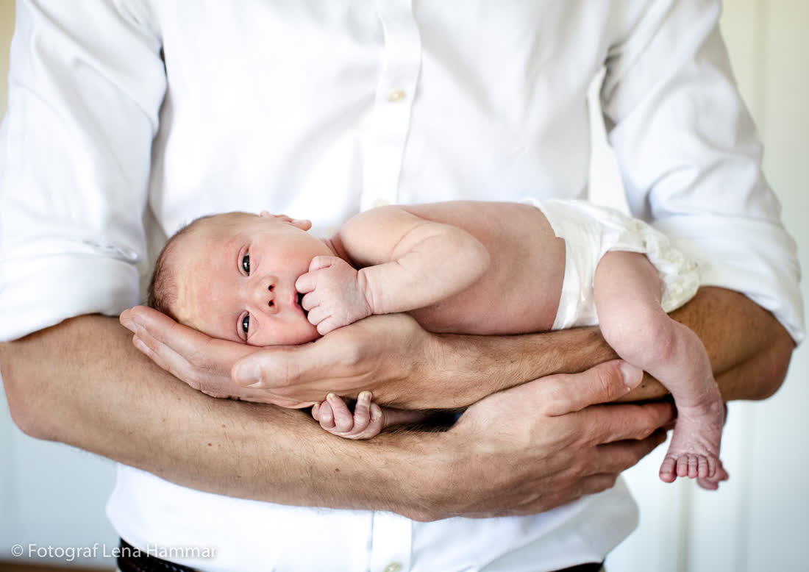
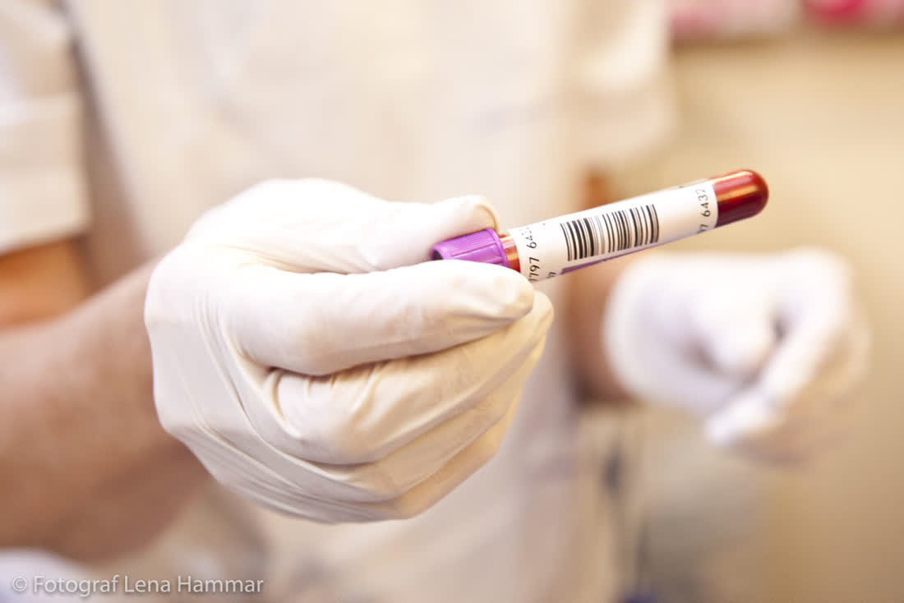

BröllopFrån 25 000 kr
BröllopFrån 25 000 kr
FamiljMidsommar på bryggan ParFörlovning i kvällsljus
ParFörlovning i kvällsljus
FöretagKonferens på önJag är Erik, bröllopsfotograf i skärgården. Jag kommer med taxibåt, stövlar och extra batterier.
Kolla vårt datumBröllopFrån 25 000 kr
FamiljMidsommar på brygganParFörlovning i kvällsljus
FöretagKonferens på ön


Ett skärgårdsbröllop är logistik: tidtabeller för Waxholmsbåten, gäster som missar sista turen, vind som tar slöjan. Jag har gjort det 70 gånger och vet vilken brygga som har bäst kvällsljus på Grinda klockan 20.40 i juli. Det ni ska tänka på är varandra.
Uppvuxen på Möja där pappa hade sjötaxi. Jag kan lägga till vid en klippa i motvind och fotografera samtidigt – inte alltid lika elegant.
Vintertid bor jag i Saltsjöbaden och fotar familjer. Sommartid bor jag i princip i båten.

11 000 kr
3 timmar på ön. Vigsel, mingel och porträtt i solnedgången.
25 000 kr
10 timmar, båtresa och förberedelser. 600+ bilder.
34 000 kr
Välkomstmiddag + bröllopsdag. Jag sover över (i tält om det behövs).
skärgårdsbröllop sedan 2014
missade båtar (en gång nära)
i Bröllopsguiden Skärgård
"Erik hoppade i vattnet för en bild av oss på klippan. Den hänger nu över soffan."Linn & Mattias, Utö
"Blåsten tog tältet. Erik tog bilderna. Bästa dagen ändå."Fatima & Oskar, Ornö
Jag bokar och betalar resan själv inom Stockholms skärgård. Ingår i priset.
Skärgården är vackrast i dramatiskt väder. Jag har regnskydd för både kamera och er.
Absolut – men jag är bäst där vägen tar slut.

Skicka datum, ö och ungefär hur många gäster. Svar inom ett dygn.
erik@kobbefoto.se